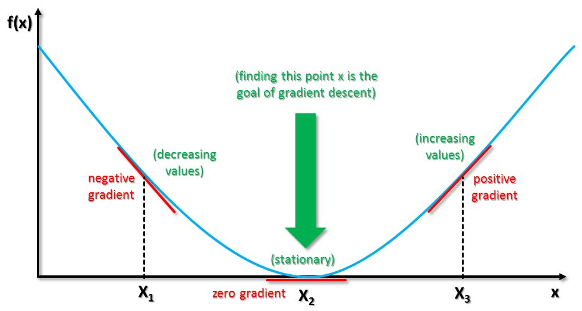
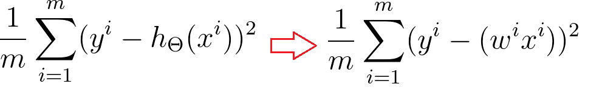

How to find the best ‘Weight’? Gradient Descent!
In this post, I will talk about ‘Gradient Descent’, one of the most popular way to find best ‘Wegith’, with an example from the previous post.
There are many different optimization algorithm, and you will need to study calculus to fully understand it.
Don’t give up even though you don’t understand this at once. (I have learned like 5 times, and still confusing 😧)
Remember this parabolic graph we found?
We can easily find the best weight with this grpah, The bottom one ! right?
But what if we have 9 features from each house?(number of living rooms, number of bath rooms, year of built and so on) Can we draw 10 dimensional graph? The answer is No.
This is why we are going to use Gradient Descent algorithm.

 The principle of Gradient Descent is pretty simple.
Wherever the ‘Weight’ is initiated, subtracting its derivative from itself will move the weight where its error is smaller
Let’s check this in code with sample data set.
Load up all libraries and data.
import numpy as np
import pandas as pd
import matplotlib.pyplot as plt
%matplotlib inline
%config InlineBackend.figure_format = 'retina'
house_price = pd.read_csv('data/house_price_train.csv')
house_price = house_price[['LotArea', 'SalePrice']]
sample_data = house_price.sample(15, random_state=3)
We are going to use the sample data as we did previous post
sqft = sample_data['LotArea'].values
price = sample_data['SalePrice'].values
#normalize the data
sqft = sqft/np.linalg.norm(sqft, ord=1)
price = price/np.linalg.norm(price, ord=1)
weight = np.arange(-4,6,0.2)
error = np.zeros(len(weight))
for idx, w in enumerate(weight):
error[idx] = np.mean((w*sqft - price)**2)
plt.subplot(2,1,1)
plt.plot(sqft, price, '.')
plt.xlabel('Area', fontsize=12, color='blue')
plt.ylabel('Price', fontsize=12, color='blue')
plt.subplot(2,1,2)
plt.plot(weight, error, '.')
plt.xlabel('W', fontsize=12)
plt.ylabel('Error', fontsize=12)
plt.show()

Let’s code Gradient Descent algorithm.
Using for loop, we are repeating
- Calculate prediction(weight x X)
- Calculate the error by comparing the prediction and actual y value(prediction - Y)
- Sum up the erros and calculate its derivative
- Move weight subtracting its derivative (new weight = weight - derivative)
iteration = 1000
weights = []
errors = []
weight = -4
for iter in range(iteration):
error = 0
for i in range(len(price)):
error += (price[i] - (weight * sqft[i]))**2
update = 0
for i in range(len(price)):
update += (2*(weight * sqft[i]) - price[i])*sqft[i]
weight = weight - update/len(price)
if(iter % 10 ==0):
errors.append(error)
weights.append(weight)
if(iter % 100 ==0):
print ("iteration : {} weight: {} error : {}".format(iter, weight, error))
iteration : 0 weight: -3.9557392076392555 error : 1.8317052672770477
iteration : 100 weight: -1.163805497824605 error : 0.3488113160444593
iteration : 200 weight: -0.12965077609920414 error : 0.09868492381795531
iteration : 300 weight: 0.25340845797478184 error : 0.04708003644318537
iteration : 400 weight: 0.395296681977216 error : 0.0335964867179579
iteration : 500 weight: 0.447853222375552 error : 0.029374699866994963
iteration : 600 weight: 0.46732058802948007 error : 0.02791692230389369
iteration : 700 weight: 0.47453145698377963 error : 0.027391494044862495
iteration : 800 weight: 0.47720242089335146 error : 0.027198866694807304
iteration : 900 weight: 0.4781917674272366 error : 0.02712778976144221
Plotting the result
sqft = sqft/np.linalg.norm(sqft, ord=1)
price = price/np.linalg.norm(price, ord=1)
weight = np.arange(-4,6,0.2)
error = np.zeros(len(weight))
for idx, w in enumerate(weight):
error[idx] = np.mean((w*sqft - price)**2)
plt.figure(figsize=(8,10))
plt.plot(weight, error, '.')
plt.ylim(-0.02, 0.6)
plt.xlabel('W', fontsize=12)
plt.ylabel('Error', fontsize=12)
plt.scatter(weights, errors, c=weights)
plt.legend(['Error', 'Weight'])
plt.show()

Can you see the weight is moving to where its error gets smaller?!…Magic !
Hope this post helped you understanding Gradient descent algorithm.
Since it is till confusing to me as well, it was hard to make a post about it 😂
Now you understand basic machine learning principle, you can show off to your friends and family